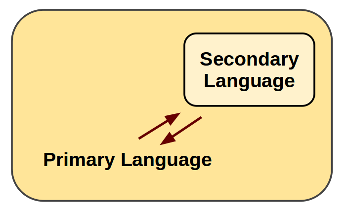

JavaScript + Other
Languages
Alon Zakai (Mozilla)
QCon
Other Languages?
Why? ;)
JavaScript is great
- Runs in all browsers
- Familiar syntax
- Dynamic typing
Other languages are great too
- Existing code
- Developer tools
- Other forms of typing (static, etc.)
Mixing Languages: examples
- Script languages in spreadsheets (C/C++ and VBA, etc.)
- Script languages in web browsers (C/C++ and JS)
- Script languages in game engines (C/C++ and Lua, etc.)
- High-performance libraries for script languages (Python and C/C++, etc.)
Direct vs indirect connections
We are talking about directly connecting two languages: They run together in the same app.
Also possible to indirectly connect them:
- Two languages working separately but read the same database
- Two languages sending messages to each other (e.g., a web browser - C/C++ and JavaScript - communicating with a Ruby server)
The Web
JavaScript is the only standards-based language in web browsers
If we want to run other languages on the web, we need to go through JavaScript
Going through JavaScript
Might seem like an odd solution
But replacing JavaScript with anything else would slow down the web
Adding another VM alongside JavaScript is complicated (cross-VM GC, etc.)
Consensus to standardize any such change would be very hard
Going through JavaScript
It turns out to be not so odd a solution!
Running other languages in JavaScript requires no standardization
Turns out performance can be good in many cases
No new VM means no new security attack surface
1. Compile Code to JS
- C/C++: Emscripten, Mandreel
- Java: GWT
- C#: JSIL
- Python: pyjs
- Lua: lua.js
- ..
- Jeremy Ashkenas's list has many dozens
Compiling to JavaScript:
Nothing New!
- 2006: Google Web Toolkit (GWT), Java to JS
- 2007: pyjamas, Python into JS
Adoption
- Java (GWT) used in Blogger, many enterprise apps
- C# (Script#) used in Microsoft Office Web Apps
How Compilation Works
For example, in Emscripten:
C/C++ => LLVM => Emscripten => JavaScript
Compilation Results
For example, this C++ code
volatile float array[5000];
int main() {
for (int i = 0; i < 5000; ++i) {
array[i] += 1.0f;
}
}turns into this JavaScript code
function main() {
var a = 0, b = 0;
do {
a = 8 + (b << 2) | 0;
g[a >> 2] = +g[a >> 2] + 1.0;
b = b + 1 | 0;
} while ((b | 0) < 5000);
}JavaScript, but a low-level subset of it called asm.js
1. Compile Code to JS
..
2. Compile VMs to JS
Use a C/C++ to JavaScript compiler on the C/C++ Virtual Machine (VM) of a language
Avoid writing a new VM or compiler for the language
Demos: C++ w/ Emscripten
Demo using XMLVM and Emscripten
Performance

(JS engines and Emscripten from June 10th 2013, run on a 64-bit linux machine)
Performance
- JavaScript can be very close to native speed, about 1x-3x slower
- C/C++ compiled to JavaScript can outperform handwritten JavaScript, which is another possible motivation to compile to JavaScript
We can run other languages on the web, by running them in JavaScript
All modern web browsers have fast JavaScript engines and support for JavaScript typed arrays, which is exactly what we need for compiled code
Connecting Languages
What do other platforms/environments do?
Embedding one language in another
Often there is a primary language, and a secondary language is embedded in it
Primary language sets up the secondary one
Still possible to communicate both ways
Embedding APIs for C/C++
Embed Python, Lua, etc. into a C/C++ project, for use as a scripting language
C APIs let you run code in the scripting language:
// C code
PyRun_SimpleString("print 'hello from python!'");Other APIs let you create Python objects and operate on them from C
Create C/C++ Modules
Access C/C++ code from Python, Lua, etc.
// C++ with Boost.Python
#include "boost/python.hpp"
char const* greet() {
return "hello from C!";
}
BOOST_PYTHON_MODULE(greeter) {
boost::python::def("greet", greet);
}
# Python
>>> import greeter
>>> greeter.greet()
hello from C!
Python => C++
Boost.Python can also wrap C++ classes for Python
// C++ class
class Cat {
string name;
public:
Cat(string name_) : name(name_) {}
void meow() { printf("%d meows\n", name);
};
BOOST_PYTHON_MODULE(Cats) {
class <Cat>("Cat").def("meow", &Cat::meow);
}
// Python
>>>> import Cats
>>>> my_cat = Cats.Cat('Fluffy')
>>>> print my_cat.meow()
Fluffy meows
That's all well and good
Can we do this in JavaScript?
yes!
C => JavaScript
Emscripten provides APIs for this on the C side
#include "emscripten.h"
int main() {
// Call JS from C
emscripten_run_script("alert('hello from C!')");
return 0;
}
C => JavaScript
Writing a C API in JS (emcc --js-library)
// JS library file
mergeInto(LibraryManager.library, {
js_func: function(x) { alert('you sent ' + x) }
});
// C code
extern "C" { void js_func(int x, int y); }
int main() {
js_func(3); // will cause alert(3)
return 0;
}
JavaScript => C
Emscripten provides APIs for this on the JS side too
// C file that was compiled to JS
int c_add(int x, int y) { return x+y; }
// Call C from JS
var result = ccall('c_add', // name
'number', // return type
['number', 'number'], // argument types
[10, 20]); // arguments
// returns 30
JavaScript => C
cwrap is useful for multiple calls
// Call C from JS
var c_add = cwrap('c_add', // name
'number', // return type
['number', 'number']); // argument types
console.log(c_add(10, 20)); // 30
console.log(c_add(20, 30)); // 50
Wrapper behaves just like a normal JS function
C++ => JS
Embind, written by IMVU, glues together C++ and JavaScript
// Access JS objects in C++ like C++ objects
#include "emscripten/val.h"
using namespace emscripten;
int main() {
val Math = val::global("Math");
return Math.call("abs", -10); // returns 10
}
JS => C++
Embind can also go the other way
// C++ library
#include "emscripten/bind.h"
using namespace emscripten;
int add (int a, int b) { return a+b; }
EMSCRIPTEN_BINDINGS(my_module) {
function("lerp", &lerp);
}
// Use it in JS
alert(Module.add(10, 20)); // shows 30
JS => C++
Embind can also wrap C++ classes for JS
// C++ class
class Cat {
string name;
public:
Cat(string name_) : name(name_) {}
void meow() { printf("%d meows\n", name);
};
EMSCRIPTEN_BINDINGS(Cats) {
class_<Cat&tt;("Cat").constructor()
.function("meow", &Cat::meow);
}
// JavaScript
var myCat = new Module.Cat("Fluffy");
alert(myCat.meow()); // shows "Fluffy meows"
Very much like Boost.Python does for Python
Challenges
- No way to know when a JS object is garbage-collected. Must call cat.delete() to properly clean it up
We can run other languages on the web, by running them in JavaScript
and we can connect them to JavaScript
Very similar to what we saw earlier that other platforms can do
Now let's see some stuff that is specific to the web
Lua scripting on the web
The time in milliseconds, reported by Lua:
.
View source if you don't believe ;)
Lua JavaScript
Dual-repl example?
Summary
We can use languages other than JavaScript on the web, by compiling them to JavaScript
Those languages can interact with JavaScript, allowing mixed-language projects
JavaScript VMs are, in effect, multilanguage VMs